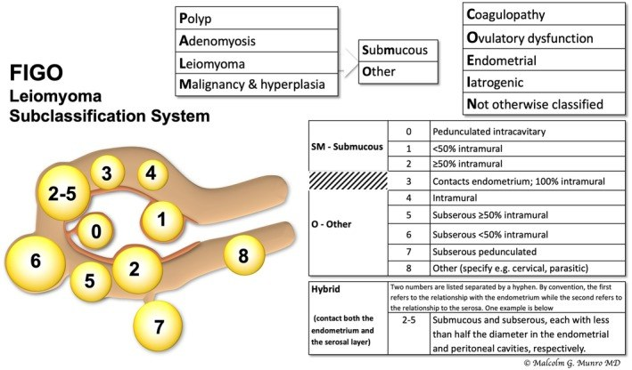
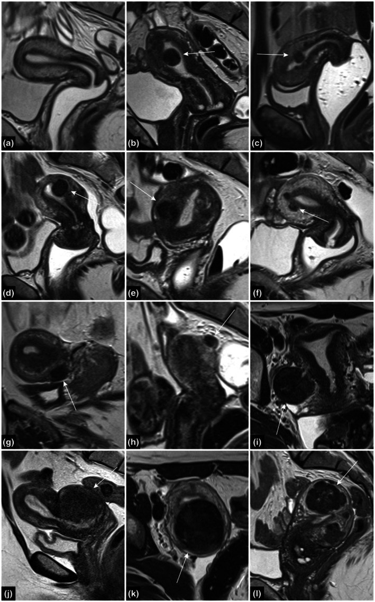
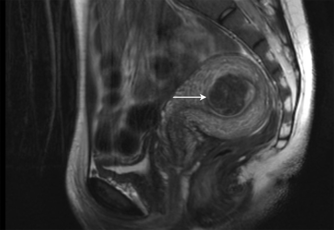
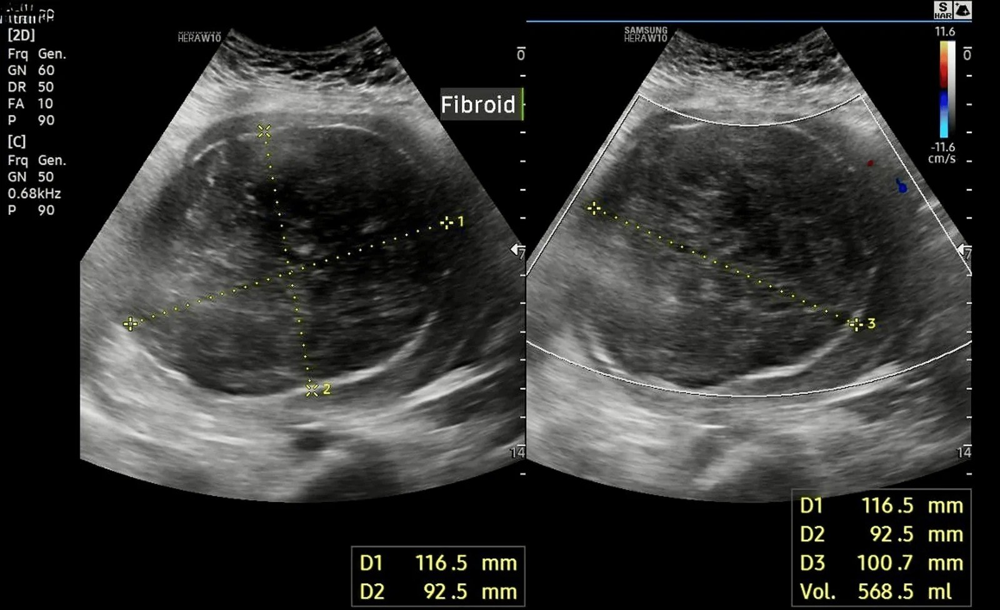
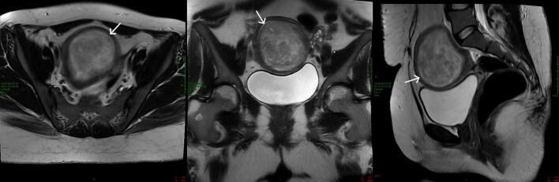
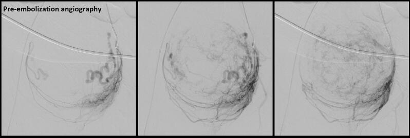
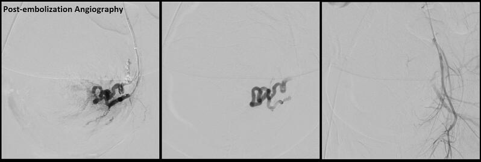
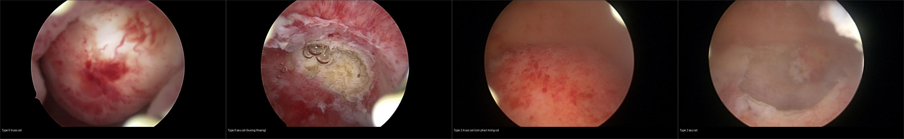
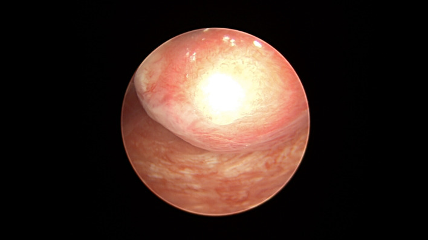
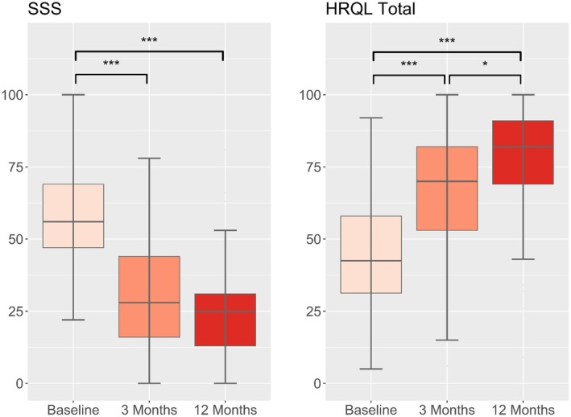

542 — U xơ dưới niêm mạc (FIGO 0–2) & can thiệp bảo tồn: soi buồng, nút mạch (UAE), MR-HIFU / Submucosal fibroids & fertility-sparing interventions
Tags: pattern:khoi-tu-cung pattern:khoi-long-tu-cung vung:tu-cung score:FIGO score:STEPW protocol:MRI-tieu-khung protocol:soi-buong-tu-cung
Mức chắc chắn (certainty): tổng hợp y văn (literature synthesis) — nhóm tự biên từ hướng dẫn ESGE (Clark 2024), tổng quan phân loại FIGO (Lakabi 2025), ca nguyên văn có ảnh mở (AlAshqar 2026; Kyaw 2026; Almasri 2026) + đoàn hệ/đoàn hệ lớn (Peker 2026; Liu 2026; Seyferth 2026; Otonkoski 2026; Briones 2026; Połukord 2026); số liệu đối chiếu từng bài gốc.
1. Tổng quan bệnh học – cơ chế hình ảnh
- Vấn đề lâm sàng: u xơ dưới niêm mạc (submucosal fibroid) là loại hiếm nhất của u xơ (Clark 2024) nhưng gây rong kinh nặng, vô sinh, sảy thai — vì khối đội nội mạc và biến dạng lòng tử cung. Đây là nhóm duy nhất mổ được qua đường TỰ NHIÊN (soi buồng) → bảo tồn tử cung, nhưng cũng là nhóm dễ vỡ kế hoạch nhất (cắt không hết, dính buồng, quá tải dịch).
- Phân loại FIGO (Munro 2011) — quyết định ngả đường:
- 0 = có cuống, hoàn toàn trong buồng (pedunculated intracavitary).
- 1 = < 50% trong cơ — góc NHỌN < 90° giữa u và nội mạc, đường kính lớn nhất u nằm trong buồng.
- 2 = ≥ 50% trong cơ — góc TÙ > 90° hai bên (Clark 2024, Fig 1).
- 3 = tiếp giáp nội mạc nhưng 100% trong cơ; 4 trong cơ hoàn toàn; 5–7 dưới thanh mạc; 8 vị trí khác (cổ tử cung, ký sinh…). Ký hiệu ghép 2-5 khi u vừa dưới niêm mạc vừa dưới thanh mạc.
- Ý nghĩa xử trí: 0–2 = soi buồng (bài này); 3 = cân nhắc "hạ độ" – nhiều thì; 4–7 = nội soi ổ bụng/mổ mở (bài 520).
- TẠI SAO hình ảnh trông như vậy (vật lý + mô bệnh):
- U xơ giàu sợi cơ trơn + collagen → T2W rất tối, bờ rõ, có vỏ giả (pseudocapsule) + mạch nuôi bao quanh (bridging vessels); khác biệt độ tương phản với nội mạc T2 sáng giúp xác định tỷ lệ trong buồng/trong cơ (chốt FIGO).
- U đè và làm phẳng/căng nội mạc → biến dạng bề mặt lòng tử cung (cavity deformation); ca Kyaw 2026: khối 116,5 × 92,5 × 100,7 mm làm biến dạng lòng tử cung nặng.
- Vôi hóa/hoại tử trong u lớn → ổ tăng đậm độ trên CT, tín hiệu hỗn hợp trên MRI.
- Ngưỡng định lượng bắt buộc:
- Nguy cơ cắt KHÔNG hết tăng khi: đường kính lớn nhất > 2 cm, diện tích bề mặt u chiếm nhiều, xuyên cơ > 50% (Clark 2024) → phải tiên lượng nhiều thì.
- Giới hạn dịch bơm (an toàn — Clark 2024): ngưỡng tối đa khi phải DỪNG ngay = 2,5 L với dịch đẳng trương (NaCl 0,9%) và 1 L với dịch nhược trương (glycine/sorbitol — nguy cơ hạ natri máu); bắt buộc hệ thống đo dịch tự động theo thời gian thực.
- Nhóm FIGO 3 ≥ 5 cm (Liu 2026, 18 ca, kỹ thuật "hạ độ"): mổ 1 thì ở 16/18 = 88,9%; thời gian mổ trung bình 41,7 phút; thiếu dịch 300–2.500 mL; kali thấp nhất 2,11–3,82 mmol/L (cảnh báo quá tải dịch) → chỉ nên làm ở trung tâm soi buồng thành thạo.
- Kết cục sinh sản sau soi buồng (Peker 2026, 50 ca vô sinh FIGO 0–II): 78% có thai, 42% sinh sống; dính buồng tử cung (IUA) 12%; không có biến chứng nặng. Tổng quan: cắt u xơ gấp đôi tỷ lệ có thai lâm sàng (Casini 2006 RCT; Pritts 2009), nhưng tác động lên tỷ lệ sinh sống/sảy thai còn chưa chắc (Clark 2024, trích dẫn và phản biện).
- Nút mạch (UAE) — theo dõi rất dài ở nữ < 40 tuổi (Seyferth 2026, trung vị 16 năm): cải thiện triệu chứng 70% "nhiều" + 18,8% "ít" trong 6 tháng đầu, 11,2% không đổi; trong nhóm cải thiện, tái phát triệu chứng 57,7% (trung vị 11 năm); không tái phát 95,8% (1 năm) / 67,6% (5 năm) / 50,7% (10 năm); thoát cắt tử cung 98,6% / 84,5% / 71,8% tại 1/5/10 năm. Hài lòng trung vị 5/5.
- MR-HIFU (Otonkoski 2026, 163 nữ): NPV trung bình 62%; SSS trung vị 56 → 28 (3 tháng) → 25 (12 tháng) ở nhóm chảy máu, 46 → 19 → 19 ở nhóm khối; cải thiện có ý nghĩa. HIFU & thai (Briones 2026, 748 ca): 40,4% mang thai, 88,1% tự nhiên, 273/310 sinh thành công, không có vỡ tử cung; tuổi lớn, đa u, u dưới niêm mạc, NPV thấp = yếu tố bất lợi.
- RFA/HIFU nói chung (Połukord 2026): giảm chảy máu 80–90% bệnh nhân, thể tích u giảm ~40–60%, can thiệp lại 8–10% trong 3–5 năm.
2. Mẫu hình + chẩn đoán phân biệt (gamut)
- Ba câu hỏi trước khi quyết định đường vào: (1) FIGO mấy (0–2 vs 3 vs ≥ 4)? (2) Kích thước + xuyên cơ bao nhiêu % (nguy cơ nhiều thì)? (3) Còn muốn có con không (quyết định soi buồng vs UAE/HIFU vs cắt tử cung)?
- Gamut "khối trong buồng gây rong kinh":
- U xơ dưới niêm mạc FIGO 0–2 (bài này): T2 tối, vỏ giả, biến dạng lòng tử cung.
- Polyp nội mạc: đồng nhất, cuống mạch đơn độc, ADC không thấp (bài 519/541).
- Adenomyosis/polypoid adenomyoma: JZ dày ≥ 12 mm, nang nhỏ, tín hiệu giống JZ (bài 520/541).
- Ung thư nội mạc thể polypoid / adenosarcoma / sarcoma: bờ không đều, xâm lấn, DWI hạn chế thật, ADC ≤ 0,9 (bài 519/526).
- Nang/huyết khối nội mạc, dính buồng (Asherman): dải T2 nội mạc mất, co kéo (bài 571).
- Gamut "can thiệp bảo tồn" (khác nhau ở chỉ định & sinh sản): soi buồng cắt u (FIGO 0–2), UAE, MR-HIFU/RFA, GnRH agonist pre-treatment.
3. Bảng so sánh phân biệt (ma trận đối chiếu)
3a. Phân biệt theo FIGO trên MRI/siêu âm (chốt ngả đường mổ)
| Thực thể (entity) | Hình ảnh điển hình | Chốt vào (rule-in) | Chốt loại (rule-out) | Gợi ý xác nhận |
|---|---|---|---|---|
| FIGO 0 | Khối trong buồng hoàn toàn, có cuống; T2 tối, vỏ giả | Cuống + u hoàn toàn trong lòng tử cung | Có phần trong cơ → không phải type 0 | Soi buồng; cắt cuống qua nội soi |
| FIGO 1 | < 50% trong cơ; góc NHỌN < 90° với nội mạc; đường kính lớn nhất trong buồng | Góc nhọn < 90° + > 50% u trong buồng | Góc tù > 90° → type 2 | MRI T2 hai bình diện + soi buồng |
| FIGO 2 | ≥ 50% trong cơ; góc TÙ > 90° hai bên | Góc tù > 90° + u nằm phần lớn trong cơ | U 100% trong cơ, không chạm nội mạc → type 3/4 | MRI; soi buồng xác nhận khi cắt |
| FIGO 3 (≥ 5 cm) | Tiếp giáp nội mạc nhưng 100% trong cơ | Tiếp giáp nội mạc + toàn bộ trong cơ | Có phần đội vào buồng → type 1/2 | MRI; kỹ thuật "hạ độ" nhiều thì (Liu 2026) |
| Polyp nội mạc | Bờ rõ, đồng nhất, cuống mạch đơn độc | Đồng nhất + cuống mạch đơn độc + ADC không thấp | T2 tối + vỏ giả + biến dạng buồng → u xơ | Soi buồng + mô bệnh |
| Adenomyosis/APA | JZ dày, nang nhỏ, tín hiệu giống JZ, không vỏ | JZ ≥ 12 mm + nang nhỏ + không vỏ | Vỏ giả + mạch bao + bờ rõ → u xơ | MRI; mô bệnh (bài 520/541) |
| Ác (adenosarcoma/sarcoma/ung thư nội mạc) | Bờ không đều, xâm lấn cơ, DWI hạn chế thật | Xâm lấn + bờ không đều + ADC thấp (≤ 0,9) | Bờ đẩy rõ + T2 tối đều → lành | Sinh thiết/mô bệnh; không cắt nhỏ (bài 519/526) |
3b. Chọn can thiệp BẢO TỒN (rule-in / rule-out theo mục tiêu sinh sản)
| Can thiệp | Cơ chế / hiệu quả định lượng | Chốt vào (rule-in) | Chốt loại (rule-out) | Ghi chú |
|---|---|---|---|---|
| Soi buồng cắt u (hysteroscopic myomectomy) | Cắt trực tiếp qua đường tự nhiên; có thai 78% / sinh sống 42% (Peker 2026) | FIGO 0–2, muốn bảo tồn sinh sản, rong kinh do u trong buồng | U > 50% xuyên cơ (type 2 nặng/type 3) một thì; nghi ác | Giới hạn dịch 2,5 L (đẳng trương) / 1 L (nhược trương); IUA 12% |
| Nút mạch tử cung (UAE) | Giảm tưới máu u; không tái phát 95,8%/67,6%/50,7% (1/5/10 năm), thoát cắt tử cung 71,8% ở 10 năm (Seyferth 2026) | U to/nhiều u không muốn/không hợp soi buồng; rong kinh nặng | FIGO 0–1; đang mong có thai; nghi ác; nhiễm trùng chậu hoạt động (Połukord 2026) | Hội chứng sau nút mạch (đau/sốt); tái phát triệu chứng 57,7%, trung vị 11 năm; có ca sinh đủ tháng sau UAE u trong buồng lớn (Almasri 2026) |
| MR-HIFU / RFA | Đốt u không xâm lấn; NPV 62%, SSS 56→25 (12 tháng) (Otonkoski 2026) | U đặc, không phải type 0 có cuống, muốn tránh mổ | U dưới niêm mạc = yếu tố bất lợi cho có thai; u quá lớn/nhiều u | Giảm chảy máu 80–90%, thể tích −40–60%, can thiệp lại 8–10%/3–5 năm (Połukord 2026); không vỡ tử cung khi sinh (Briones 2026) |
| GnRH agonist / progestin | Giảm thể tích u tạm thời, cầm máu | Chuẩn bị trước mổ, thiếu máu cần cải thiện | Điều trị triệt để lâu dài | Ca Kyaw 2026: leuprorelin rồi tự thải u qua âm đạo (biến cố hiếm) |
| Cắt tử cung | Triệt căn | Không còn nhu cầu sinh sản + triệu chứng nặng | Muốn bảo tồn sinh sản | Chỉ khi các biện pháp bảo tồn thất bại |

Sơ đồ phân loại FIGO u xơ: SM 0/1/2 (dưới niêm mạc), O 3–7 (khác) và 8; có nhánh tích hợp hình thái khác (polyp/adenomyosis/u ác) — cơ sở quyết định "soi buồng hay mổ bụng". Nguồn: Lakabi R et al., Int J Gynaecol Obstet 2025 (PMC12553092), Fig 1 (Malcolm G. Munro), CC BY-NC.
Chuỗi 12 ô: (a) giải phẫu phân vùng bình thường (nội mạc sáng – vùng chuyển tiếp tối – cơ trung gian); (b–l) các kiểu u xơ từ dưới niêm mạc có cuống/trong cơ tới dưới thanh mạc. Cách đọc góc nhọn < 90° (type 1) vs góc tù > 90° (type 2) là chốt. Nguồn: Lakabi R et al., Int J Gynaecol Obstet 2025 (PMC12553092), Fig 2, CC BY-NC.Chốt then chốt
- Góc u–nội mạc quyết định type 1 vs type 2, không phải chỉ "tỷ lệ ước lượng mắt".
- Với mục tiêu sinh sản, ưu tiên soi buồng cho FIGO 0–2; UAE/HIFU không phải lựa chọn "trung tính" với sinh sản — UAE chống chỉ định tương đối khi đang mong có thai và kém hiệu quả với u dưới niêm mạc FIGO 0–1 (Połukord 2026).
- Đừng quên biến chứng "quá tải dịch" của soi buồng — ngưỡng 2,5 L/1 L là giới hạn sống còn.
4. Protocol chụp + hệ phân độ/điểm chuẩn hóa
- Siêu âm đầu tay (TVUS 2D/3D, ± SIS): khối trong buồng/trong cơ, độ xuyên cơ, biến dạng lòng tử cung; siêu âm bơm nước (SIS) giúp đo tỷ lệ trong buồng.
- MRI tiểu khung — tiêu chuẩn xác định FIGO & lập kế hoạch mổ:
- T2W 2–3 bình diện (sagittal + axial ± coronal): đo % trong cơ, góc u–nội mạc (nhọn < 90° vs tù > 90°), vị trí so với JZ; ca phức tạp mới cần MRI (Lakabi 2025).
- T1W (± fat-sat): xuất huyết/hoại tử; T1 + Gd động học khi nghi ác.
- DWI + ADC khi nghi biến thể ác (bài 526).
- Nội soi buồng tử cung (hysteroscopy) — tiêu chuẩn vàng: xác nhận type, cắt u; nhóm FIGO 3 to dùng kỹ thuật "hạ độ" (cắt dần nhiều thì/1 thì ở trung tâm lành nghề — Liu 2026); ca AlAshqar 2026 bơm vasopressin pha loãng vào u rồi cắt bằng MyoSure ở trẻ 18 tuổi.
- Hệ điểm STEPW (Lasmar 2012, ESGE khuyến nghị — Clark 2024): chấm điểm theo 5 mục — Size (S), Topography (T), Extension of base (E), Penetration (P), Lateral wall (L), cộng tổng để tiên lượng độ phức tạp và số thì. Ví dụ ngưỡng từ bảng ESGE: size < 2 cm = 0; 2–5 cm = 1; > 5 cm = 2; xuyên cơ 0 = 0, < 50% = 1, ≥ 50% = 2**; nhóm **type 3 ≥ 5 cm** trong loạt Liu 2026 có **77,8% điểm STEPW > 6.
flowchart TD
A[Rong kinh / vo sinh + khoi trong buong] --> B[MRI T2: do % trong co + goc u-noi mac]
B --> C{Khoi la u xo?}
C -->|Khong| D[Polyp / adenomyoma / AC -> sinh thiet + mo benh]
C -->|Co| E{FIGO may?}
E -->|0-2| F{Muon co con?}
E -->|3| G{>= 5 cm + xuyen co sau?}
E -->|4-7| H[Noi soi o bung / mo mo - bai 520]
F -->|Co| I[Soi buong cat u: gioi han dich 2,5 L dang truong / 1 L nhuoc truong]
F -->|Khong, u to/nhieu u| J[UAE hoac MR-HIFU/RFA: giam the tich 40-60%, chay mau 80-90%]
F -->|Khong muon mo| J
G -->|Co| K[Ky thuat ha do nhieu thi o trung tam thanh thao]
G -->|Khong| I
I --> L{Khong het / tai phat?}
L -->|Co| M[Thi lai hoac chuyen UAE/HIFU/mo mo]
L -->|Khong| N[Theo doi: HSG kiem tra buong, sinh san]
5. Biến thể bình thường và cạm bẫy
- "Nhỏ" không đồng nghĩa "dễ": u > 2 cm hoặc xuyên cơ > 50% đã làm tăng nguy cơ cắt không hết → phải tiên lượng nhiều thì và siêu âm bơm nước sau mổ (Clark 2024).
- Quá tải dịch — cạm bẫy chết người: dừng khi dịch thiếu 2,5 L (đẳng trương) / 1 L (nhược trương); loạt FIGO 3 của Liu 2026 có thiếu dịch tới 2.500 mL và kali 2,11 mmol/L → không soi buồng u lớn ở nơi thiếu hệ thống đo dịch tự động.
- Đừng nhầm u xơ dưới niêm mạc với adenosarcoma/sarcoma: nếu bờ không đều, DWI hạn chế thật, tăng trưởng nhanh → sinh thiết trước khi cắt nhỏ (bài 519/526) — cắt nhỏ u ác gây gieo rắc (bài 518).
- UAE "bảo tồn" nhưng không bảo đảm có thai: tái phát triệu chứng 57,7% (trung vị 11 năm), thoát cắt tử cung chỉ 71,8% ở 10 năm (Seyferth 2026); FIGO 0–1 và đang mong có thai là chống chỉ định tương đối (Połukord 2026). Ca Almasri 2026 (u trong buồng lớn → UAE → sinh đủ tháng) là ngoại lệ may mắn, không phải mặc định.
- MR-HIFU không hợp u có cuống/dưới niêm mạc: u dưới niêm mạc là yếu tố bất lợi cho có thai sau HIFU (Briones 2026); cần MRI tiền can thiệp để loại u cuống và đánh giá NPV dự kiến.
- Tự thải u là biến cố hiếm chỉ trong 2 bối cảnh: hậu sản hoặc sau nút mạch — ca Kyaw 2026 (u 116,5 × 92,5 × 100,7 mm tự ra sau leuprorelin ở hậu sản) thuộc dạng rất hiếm; không chọn "chờ tự ra" làm kế hoạch điều trị.
- Nguy cơ ác của "u xơ" nói chung vẫn rất thấp nhưng u mọc nhanh sau mãn kinh, không dùng HRT là dấu hiệu cảnh báo → không hoãn đánh giá mô bệnh.
6. Tự lượng giá — Blind Quiz ngay trên trang tĩnh
Ca 1 — Nữ 18 tuổi, rong kinh nặng không đáp ứng thuốc. Nhìn siêu âm + MRI, mô tả trước.

- Gợi ý lâm sàng (clinical context): 18 tuổi, chưa sinh, rong kinh nặng; TVUS u 3,8 × 4,1 × 3,6 cm.
- Câu hỏi: MRI cho thấy u xuất phát từ đâu và FIGO mấy? Đường vào hợp lý để bảo tồn sinh sản là gì?
Bấm để hiện đáp án (findings + chẩn đoán)
- Dấu hiệu (findings): MRI — u xơ dưới niêm mạc FIGO type 2 xuất phát từ đoạn trên thành trước bên trái tử cung, đội vào lòng tử cung (mũi tên).
- Chẩn đoán (diagnosis): u xơ dưới niêm mạc FIGO 2 ở trẻ vị thành niên (hiếm). Xử trí: soi buồng cắt u (bơm vasopressin pha loãng vào u + cắt bằng MyoSure) — bảo tồn tử cung, hết rong kinh, hậu phẫu thuận lợi.
- Nguồn ảnh: AlAshqar A et al., Int J Surg Case Rep 2026, PMC13340680, Fig 2, CC BY-ND (nguyên bản).
Ca 2 — Nữ 39 tuổi hậu sản, rong kinh nặng dai dẳng. Nhìn siêu âm, mô tả trước.

- Gợi ý lâm sàng: 39 tuổi, nhiều lần sinh, sau sinh 3 tháng rong kinh nặng không đáp ứng thuốc.
- Câu hỏi: siêu âm cho thấy khối kích thước bao nhiêu và hệ quả gì với lòng tử cung? Vì sao "tự thải u" là biến cố cần biết nhưng không nên là kế hoạch điều trị?
Bấm để hiện đáp án (findings + chẩn đoán)
- Dấu hiệu (findings): siêu âm 3 tháng hậu sản — u xơ dưới niêm mạc 116,5 × 92,5 × 100,7 mm, biến dạng nặng lòng tử cung; sau leuprorelin bệnh nhân tự thải u qua âm đạo, mô bệnh = u xơ nhồi máu (không ác), siêu âm lại giảm nhiều, soi buồng lòng tử cung bình thường, không dính buồng.
- Chẩn đoán (diagnosis): tự thải u xơ dưới niêm mạc lớn — biến cố rất hiếm, thường gặp hậu sản hoặc sau nút mạch; co hồi tử cung hậu sản + GnRH agonist là yếu tố góp phần. Không chọn chờ tự thải làm kế hoạch — cần theo dõi sát để loại u tồn dư/biến chứng.
- Nguồn ảnh: Kyaw EMM et al., Cureus 2026, PMC13555747, Fig 3, CC BY 4.0.
Ca 3 — Nữ 31 tuổi, rong kinh nặng cần truyền máu, u trong buồng tử cung. Nhìn MRI + DSA, mô tả trước.

- Gợi ý lâm sàng: 31 tuổi, rong kinh nặng, thiếu máu cần truyền; MRI u chiếm toàn bộ lòng tử cung.
- Câu hỏi: u có xâm lấn cơ không? Kết cục sinh sản sau UAE ra sao (nhìn DSA trước–sau)?
Bấm để hiện đáp án (findings + chẩn đoán)
- Dấu hiệu (findings): MRI T2 (axial/coronal/sagittal) — khối bờ rõ chiếm toàn bộ lòng tử cung, tín hiệu trung gian–cao, cơ xung quanh còn nguyên, không xâm lấn; DSA thì trước nút mạch: u mạch hóa mạnh với nhiều nhánh nuôi phì đại;

DSA thì sau nút mạch: gần hết "blush" u, thuốc ứ trong nhánh đã nút = đích nút mạch đạt.

- Chẩn đoán (diagnosis): u xơ dưới niêm mạc trong buồng lớn, nút mạch hai bên bằng hạt PVA → có thai tự nhiên sau 16 tháng, sinh đủ tháng, không biến chứng. Đây là ngoại lệ thuận lợi: UAE nói chung không khuyến cáo cho u dưới niêm mạc FIGO 0–1 và người đang mong có thai.
- Nguồn ảnh: Almasri MS et al., Case Rep Womens Health 2026, PMC13085015, Fig 1–3, CC BY-NC-ND (nguyên bản).
Ca 4 — Ảnh ghép: cắt u qua nội soi trước–sau. Chỉ ra type 0 và type 2, giải thích vì sao type 2 khó hơn.

- Gợi ý lâm sàng: hai bệnh nhân rong kinh do u dưới niêm mạc, được cắt qua nội soi buồng.
- Câu hỏi: Bên nào type 0, bên nào type 2? Vì sao type 2 cần nhiều thì hơn và cần theo dõi buồng sau mổ?
Bấm để hiện đáp án (findings + chẩn đoán)
- Trái (2 ô đầu): type 0 — u hoàn toàn trong buồng, cắt trọn dễ, sau cắt lòng tử cung thoáng.
- Phải (2 ô cuối): type 2 — u ≥ 50% nằm trong cơ, cần bóc/phân tách, dễ còn sót và dễ gây dính buồng hơn; phải kiểm tra buồng sau mổ (siêu âm bơm nước/HSG) và theo dõi sinh sản (IUA 12% — Peker 2026).
- Nguồn: Clark TJ et al., Facts Views Vis Obgyn 2024, PMC11819789, Fig 2–3, CC BY 4.0. Ảnh ghép letterbox, giữ aspect.
Ca 5 — Soi buồng tử cung: khối u đội vào buồng, góc cạnh với nội mạc. Nhìn ảnh, mô tả trước.

- Gợi ý lâm sàng: rong kinh; soi buồng thấy khối trong buồng tử cung.
- Câu hỏi: Dấu hiệu "góc nhọn vs góc tù" nghĩa là gì? Nếu type 1 thì điều trị đầu tay?
Bấm để hiện đáp án (findings + chẩn đoán)
- Dấu hiệu (findings): nội soi — u dưới niêm mạc với **góc nhọn < 90°** giữa u và nội mạc và **đường kính lớn nhất nằm trong buồng** → **type 1** (> 50% trong buồng).
- Chẩn đoán (diagnosis): u xơ dưới niêm mạc FIGO 1 — soi buồng cắt u là đầu tay; nếu > 50% xuyên cơ/góc tù > 90° (type 2 nặng) → nguy cơ cắt không hết, cân nhắc nhiều thì hoặc phương án khác.
- Nguồn ảnh: Clark TJ et al., Facts Views Vis Obgyn 2024, PMC11819789, Fig 1B, CC BY 4.0.
Ca 6 — Biểu đồ kết cục MR-HIFU: nhìn hình, mô tả trước.

- Gợi ý lâm sàng: bệnh nhân u xơ có triệu chứng chảy máu, được MR-HIFU.
- Câu hỏi: Chỉ số nào giảm, giảm bao nhiêu? NPV trung bình là bao nhiêu và nó dự báo gì?
Bấm để hiện đáp án (findings + chẩn đoán)
- Dấu hiệu (findings): boxplot — SSS trung vị 56 → 28 (3 tháng) → 25 (12 tháng); HRQL tăng tương ứng (khác biệt có ý nghĩa, p < 0,001). NPV trung bình 62%.
- Chẩn đoán (diagnosis): MR-HIFU giảm triệu chứng chảy máu và cải thiện chất lượng sống có ý nghĩa; NPV (tỷ lệ thể tích không tưới máu) thấp là yếu tố bất lợi cho cả kết cục triệu chứng và khả năng có thai (Briones 2026). Lưu ý u dưới niêm mạc là yếu tố bất lợi cho sinh sản sau HIFU.
- Nguồn ảnh: Otonkoski S et al., Acta Obstet Gynecol Scand 2026, PMC13394642, Fig 2, CC BY-NC-ND (nguyên bản).
Bài liên quan chéo
- 500 – Tổng quan Hệ Vú & Sản Phụ khoa
- 520 – U xơ cơ tử cung (FIGO 0–8), adenomyosis & nội mạc
- 519 – Adenosarcoma tử cung & polyp nội mạc: khối trong lòng tử cung giả polyp
- 541 – U xơ tuyến (adenofibroma) & polypoid adenomyoma
- 526 – Sarcoma tử cung & carcinosarcoma vs u xơ
- 518 – Morcellation & leiomyomatosis peritonealis disseminata (LPD)
- 571 – Sẩy thai tái diễn: tiếp cận hình ảnh tử cung
Ảnh
- 13 ảnh (CC BY 4.0 ×1 + CC BY ×5 + CC BY-NC ×2 + CC BY-NC-ND ×4 + CC BY-ND ×1) + 1 ảnh ghép (CC BY 4.0). Nguồn + giấy phép từng ảnh trong
images/CREDITS.md.
Không dùng để chẩn đoán độc lập khi chưa có người hướng dẫn.